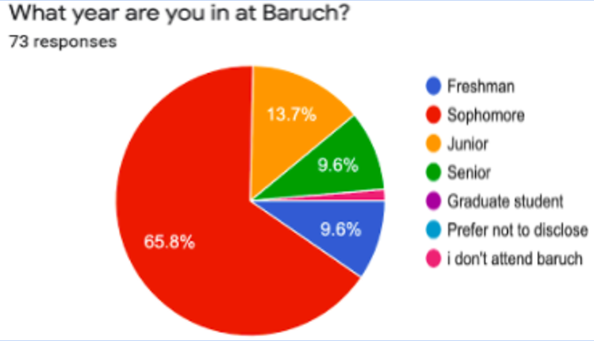
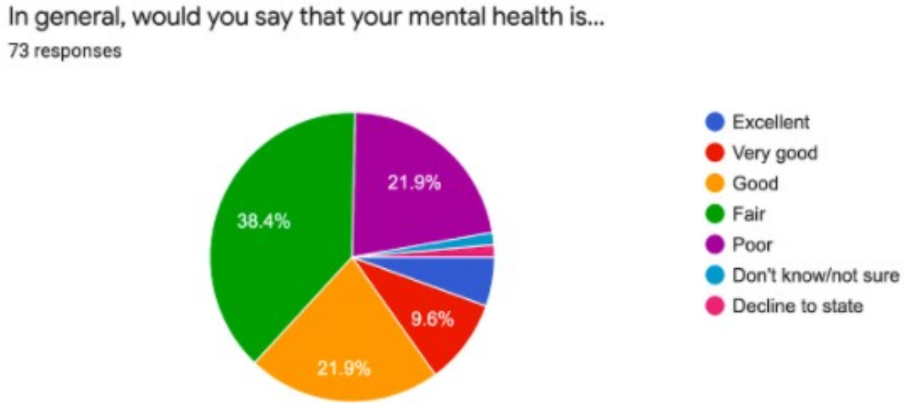
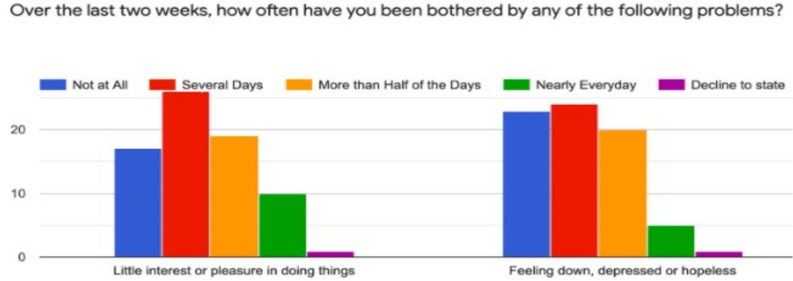
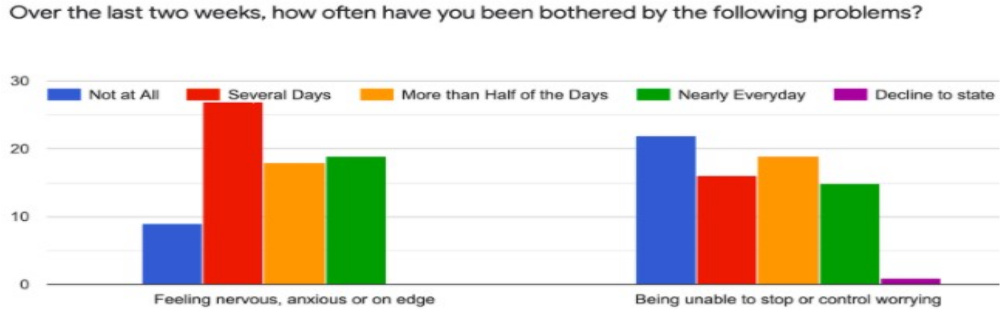

How COVID-19 has Affected Baruch Students
A study by:
- Agnes Chen •
- Ashley Chen •
- Leah Loperena •
- Afroza Nishi •
- Michael Orman •
- Jessica Yeroshalami •
- Allison Yi
Our Poster

Introduction
- Due to the COVID-19 pandemic, our lives have drastically changed. The pandemic has caused our educational environment to transition to remote, unemployment rates to rise, and a decline in our physical and mental health.1
- Studies have shown that these stressors are causing symptoms of anxiety, depression, and loneliness.2
- Studies have shown an increase in social media consumption among young people and the decline in mental health during this pandemic.3
Objectives
- To capture the experiences of Baruch students and their mental health/state.
- Present our findings to Baruch faculty/administrators so that they can better serve the needs of their students.
Methods
- Administered a 12 question online survey to Baruch students that was available for a week.
- Breakdown of Participants:

- Conducted a chi square test to determine the correlation between mental health of students and the global health crisis.
Results
Null Hypothesis: The mental health of Baruch students is not affected by the pandemic.
Alternate Hypothesis: The mental health of Baruch students is affected by the pandemic.



Conclusion
- Our results support our hypothesis that COVID-19 has a negative impact on the mental health of Baruch students
- Most students (60.3%) report being in only fair (38.4%) or poor (21.9%) mental health during the pandemic
- In these categories most students reported negative mental health all, most, or several days of the week:
- Little interest or pleasure doing things (75.3%), Feeling down, depressed or hopeless (67.1%), and Feeling nervous anxious or on edge (87.7%).
- There is no evidence that the pandemic causes an inability to control or stop worrying
- Lack of information on Baruch students’ mental health pre-pandemic; it was unattainable information.
- Future work should address specific methods on how to improve students’ mental health.
References
- Beck, Francois, et al. "Covid‐19 health crisis and lockdown associated with high level of sleep complaints and hypnotic uptake at the population level." Journal of Sleep Research (2020): e13119.
- Ellis, Wendy E., Tara M. Dumas, and Lindsey M. Forbes. "Physically isolated but socially connected: Psychological adjustment and stress among adolescents during the initial COVID-19 crisis." Canadian Journal of Behavioural Science/Revue canadienne des sciences du comportement 52.3 (2020): 177.
- Gao, Junling et al. “Mental health problems and social media exposure during COVID-19 outbreak.” PloS one vol. 15,4 e0231924. 16 Apr. 2020, doi:10.1371/journal.pone.0231924
- Nathiya, Deepak, et al. “Mental Health Problems and Impact on Youth Minds During the COVID-19 Outbreak: Cross-Sectional (RED-COVID) Survey.” Social Health and Behavior, vol. 3, no. 3, Wolters Kluwer India Pvt. Ltd, July 2020, pp. 83–88, doi:10.4103/SHB.SHB_32_20.
Acknowledgements
We want to thank everyone who participated in our survey and a special thank you to Professor Calamari for supporting our study.